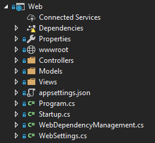

Single Responsibility Principle
Class
Class
Original Definition
A class should have only one reason to change.
-- Robert Martin
reason to change???
Why Change
- Technical Reasons
- Business Reasons
Contact Management (CRM)
Company Report

Have a bias toward Business Reasons
Cohesion
Single Line
Single Line
of Code
Code Example
Function
Function
Functions should do one thing. They should do it well. They should do it only.
-- Robert Martin
Code Example
Module
Module
A collection of classes and functions.
A module should have a well defined set of reasons to change...
...and these reasons should have a bias toward a business outcome.
Categories
- Business Logic
- Abstract you from Implementation Details
- Delivery Mechanisms
Organize Folders by Use Case

Folders Gone Wrong
System
System
can be deployed
Clean Architecture
Onion Architecture


Domain Driven Design